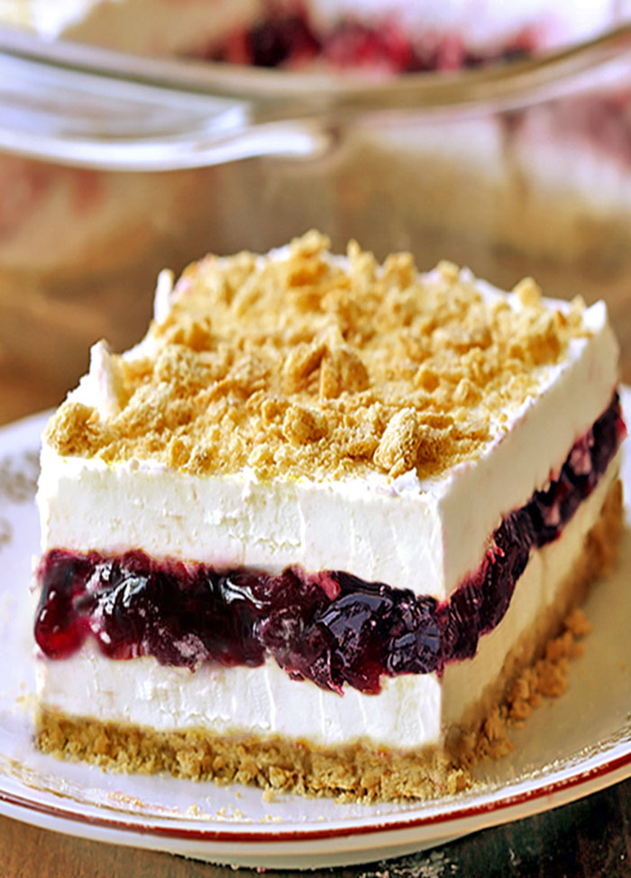

Blueberry Delight
Summer's Favorite Dessert!

Description
Blueberry Delight is my favorite dessert, one that has been served to
me by my mother for as long as I can remember. it is a blueberry and cream
cheese based pie dessert with a graham cracker crust. Perfect for the summer!
Ingredients
- One bag of graham crackers
- One stick of butter
- One tub of whipped cream
- One cup of powdered sugar
- One stick of cream cheese
- One can of blueberry preserves
Steps
- In a large bowl, combine the powdered sugar, whipped cream, and
cream cheese.
- Break up the graham crackers in a bowl.
Melt the butter and combine with the graham crackers.
- Press the graham crackers into a pie tray to create the pie crust
- Spread a layer of the cream cheese spread onto the crust
- Next, spread another evenly sized layer of the blueberry preserves
on top of the cream cheese spread
- Add a final layer of the cream cheese spread on top
- chill for one hour and serve